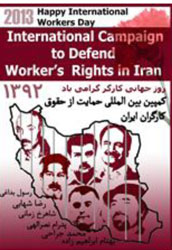

|
|
|
Browsing
Contact Us |
Campaigners |
Face to Face |
Tribune |
Interview |
News |
On the Web |
One Million |
Report
Farsi | Français | German | Italian | Spanish | العربية Also in this section
|
 International campaign to support the rights of Iranian workersIn the run-up to the International Day of Labor on May 1 the campain brings attention to the plight of all Iranian workers Tuesday 23 April 2013 View online : All Human Rights for All in Iran The elimination of subsidies, the increasing economic sanctions, policies of economic adjustment, privatization, and the increasing growth of parasitic economics have resulted in the closure of many production plants, and the move of the industrial and agricultural production sector toward non-production activities are threating the lives and livelihood of millions of workers and their families in Iran.. The reports of the Economic Commission of the Parliament of the IRI, as reported by Worker’s News, in the Fall of 2011 indicate that 50% of production centers in Iran have either been closed or are on the verge of closure and most of the larger production centers are working at less than 30% capacity. The Campaign calls on those who believe in social justice and who want the freedom of imprisoned workers, to become the voice of Iranian workers between the 21st of April to the 1st of May, and work through whatever means available to them to bring attention to the plight of all Iranian workers, including those who are employed, unemployed, women workers, child workers, Afghan workers and especially imprisoned workers. The Livelihood of Workers in Iran Workers live under the poverty line in Iran. It should be noted that the process of establishing the minimum wage per month for workers, carried out by the High Council of Employment and the Ministry of Cooperatives, Work and Social Security is not even in line with Article 41 of the Iranian Law on Employment. At the same time, the current situation also violates Article 25 of Universal Declaration on Human Rights. Article 25 of the UDA states: “everyone has the right to a standard of living adequate for Work Related Accidents Slow death is not the only threat facing Iranian workers. Death resulting from workplace accidents, is a major threat facing workers, which contributes to the death of 1000‘s of workers on a yearly basis. Most workers are employed in small plants without any regulatory oversight. When they die as a result of work related accidents, their families are left without a bread winner or financial recourse, as these workers are not insured. According to reports from the office of the Medical Examiner, 5 workers die as a result of work related accidents per day. This rate has witnessed a yearly increase. In 2010, the number of workers dying as a result of work related accidents was 1290 persons. In 2011 the figure increased to 1507. According to reports and statistics, work related injuries are the second highest factor leading to death in Iran. Falling from buildings in construction sites while at work, dying as a result of explosion in mines, fires in work places, the collapse of buildings and falling into deep wells comprise the most frequently reported work related accidents resulting in death of workers. In almost all the cases, these accidents occur as a result of the absence of safety measures and unsafe working conditions. ILNA (Iranian Labor News Agency) has repeatedly reported on the oversights and shortcomings on the part of government inspectors from the Ministry of Cooperatives, Work and Social Security. Examples of work related incidents are plenty including a fire in the fall of 2011 at the Foulad factory in Yazd during which 18 workers lost their lives and a number suffered severe burns, including burns on more than 50% of their bodies. In February of 2012, a mines explosion in Tabas resulted in the loss of lives of 8 workers. Legal measures taken up by the courts in several incidents have not resulted in any redress for workers and their families. The Dismissal of Workers and the Crisis of Employment Many of the employers, because of the relationships they enjoy with the State, have been able to take advantage of lower rates for purchase of currencies, to pay for their imports, their equipment or primary products necessary for production. The sale of the lower priced currency, which is available to those with connections with the government, or investing in sales business, rather than production, generates more profit. As a result of these trends, many employers who are not subject to oversight and controls have closed their factories and workshops and dismiss workers. According to the head of the House of Workers, a government entity, between May 1, 2011 and May 1, 2012, 100,000 workers were dismissed from their places of employment. Imprisoned Workers Despite the fact that Iranian law recognizes the rights of workers to set up trade organizations and unions, the government has resisted and seriously opposes and prevents efforts by workers to set up independent organizations in support of their rights and demands. Progressive workers, who have worked to set up Syndicates and unions, have been harassed and pursued legally. For example, members of the Bus Drivers Syndicate of Greater Tehran, Haft Tapeh Sugar Worker’s Syndicate of Ahvaz, Painters Syndicate, Free Workers Union, and the Committee for Support of Workers ‘Organizations, have all experienced pressures crackdowns by security officials. Many of the members of these workers organizations have been sentenced to long prison terms, and at present several of them are serving their prison terms. The following workers’ rights activists have been sentenced to serve prison terms and are serving their prison terms: Shahrokh Zamani, 11 years; Reza Shahbi, 6 years; Mohammad Jarahi 5 years; Behnam Ibrahimzadeh, 5 years (on furlough at the time this report was prepared); and Pedram Nasrollahi, 18 months. In addition to A number of workers and union members currently in prison are severely ill, including Shahrokh Zamani and Mohammad Jarahi, and need urgent medical care and supervision outside of prison. The names of union members/workers and teachers currently in prison are as follows: Shahrokh Zamani, Mohammad Jarahi, Behrooz Allamehzadeh, Behrooz Nikfard, Alireza Saeedi, Qaleb Hossieni, Ali Azadi, Pedram Nasrollahi, Rasool Bodaghi (member of the teachers trade union), Abdulreza Ghanbari, (member of the teachers trade union), Mehdi Farahi Shandiz, Sharif Saed Panah, and Mozafar Saleh Nia. The Situation of Female Workers Female workers, in Iran’s patriarchal society suffer from multiple historical, cultural, social and legal discriminations. They are also the first victims who suffer from political, social and economic crisis in Iran. Besides being employed in low paying and intensive labor professions, with long hours and often informal and illegal working conditions, female workers receive lower pay, even for equal work. Female workers are also the first to be dismissed when their employers suffer economic woes. The increases in the rate of unemployment of women, has increased from 33% in 2005 to 44% in 2010 according to official stats. According to official statistics, female workers comprise 5% of the total workers and laborers. Because women are often employed in the informal sector they are often not even counted in official statistics. Even in formal employment sectors the rights of women workers are often not upheld, and the benefits that according to the law they are entitled to is often denied them. These benefits, such as maternity leave, time off to breastfeed infants, the creation of breastfeeding facilities at their workplace and establishment of day care facilities at their workplace, have in fact resulted in employers ‘reluctance to hire women workers. Some employers force women to sign contracts which oblige them to avoid pregnancy during their term of employment. According to Article 191 of the Law on Employment, small workshops employing less than 10 persons are not obliged to meet the laws and regulations set forth in the Law on employment. According to reports, the workers working in this sector, who tend to be predominantly women, are employed without the right to health insurance, government pensions (which employers contribute to), annual leave, and maternity leave. They often work long hours, are engaged in difficult work and get paid a low wage. There is no oversight of safety and health issues provided at these workshops. A large number of female workers have turned to production work in their own homes, which they often carry out with the help of their families and children. This type of labor is often difficult, involves long hours and has no government oversight, as it is in the homes of the female workers. With the adoption of the “Off-site Work Program,“ the government has s encouraged this type of domestic production work, which allows exploitation of workers by employers and contributes to increased physical, emotional and psychological pressures on and violence against women. Unfortunately to the ranks of these female workers, we have to add those engaged in prostitution, whose numbers are on the rise. This sector of female workers, not only does not benefit from any rights, but are at risk of arrest, prison and even execution. Child Labor/Workers Article 79 of the Law on employment has outlawed the employment of children under the age of 15. But according to unofficial statistics and based on reports from Mashregh Website (a government site) and the Parliamentary Research Center in the Fall of 2012, three million and 265 thousand children were left behind from education. Of these children who are out of the school system, 3 million of them were identified as child workers/laborers. Child workers tend to be employed in small workshops or are engaged in production of products at home (domestic production) or work as street peddlers selling products to consumers on the streets. Given the 40% inflation rate and the poverty rate of vulnerable families, the number of these children is on the rise. Under current circumstances, especially given the high level of dismissals of workers from industrial factories/workshops, women and children are facing increasing poverty and enjoy no social supports or safety nets. As a result the numbers of women and children entering prostitution is on the rise, the age of those turning to drugs and addiction has decreased, and illiteracy or low literacy is on the rise. Afghan Workers The situation of Afghan workers and in general the situation of refugee and migrant workers in Iran is disastrous. Of the two million Afghan workers living in Iran, about two thirds, meaning 1 million and 400 thousand do not have legal working papers. Despite the fact that they have lived in Iran for years, the government, has not addressed their situation. This situation has added to their problems, so much so, that they do not even benefit from the limited rights that other workers enjoy. The pay scale of Afghan workers, as compared to, workers who have been officially hired as full time permanent workers, is much lower, and their working conditions are much more difficult. Afghan workers do not benefit from health insurance, pension benefits, or workers ‘compensation. Their children do not have the right to be educated and they do not have identity cards. These workers and their families live under very difficult circumstances. |